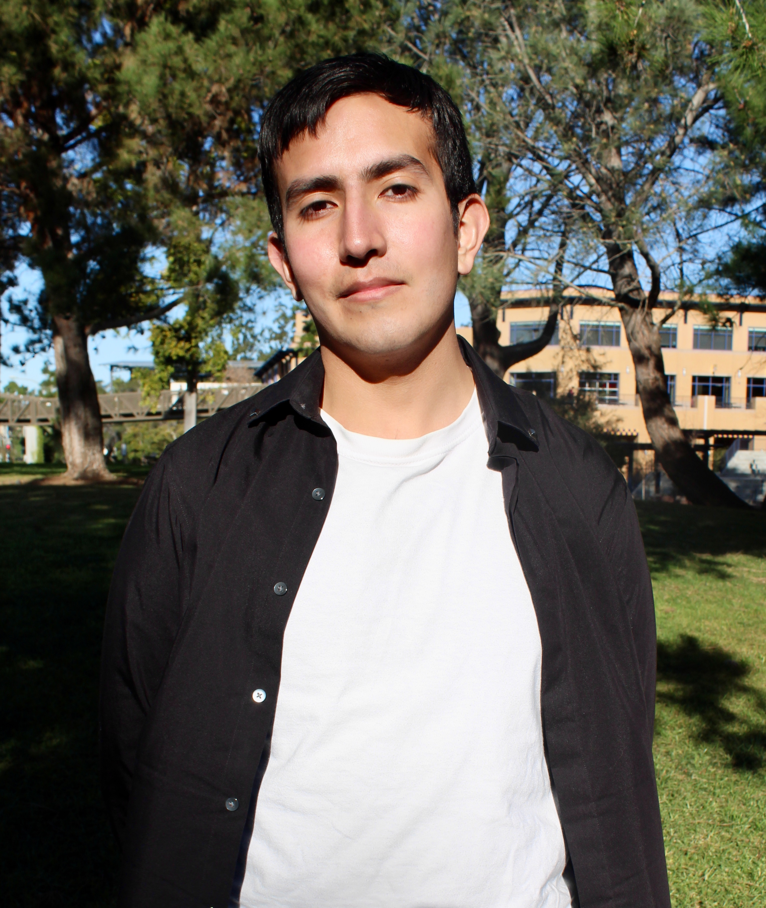

Adrian Perez
 This edition's star of Humans of ICS is Adrian Perez!
We hope you enjoy reading about Adrian and his interest in philosophy, as well as stories on skateboarding, jiu-jitsu, and Petr drops!
Year: 4th Major: Computer Science and Philosophy Personality Type: INTJ Favorite Class: LPS H81: What is Space?
Justine: Why did you choose CS and Philosophy as your majors?
Adrian: I chose Computer Science and Philosophy because I was very interested in the development of technology in society. When I was going through my first quarter at UCI, I thought, “Hey, you know what? I am spending a lot of money to be here and I have space in my course load.” So I decided to add in philosophy since it is a field of study that really interests me and I’ve been enjoying it since high school. I thought it would be a cool idea to do two majors that are pretty distinct but also have some compatibility. For example, artificial intelligence, logic, and ethics are all things that are important in philosophy and computer science.
J: Do you have any advice for someone interested in double majoring?
A: My advice would be to see what really interests you the most. I would recommend working out a 4-year plan for yourself, or even a 5-year plan. You can always take summer sessions as well if you’re really passionate about double majoring. It helps to find two majors that can complement each other. For example, I am doing Philosophy and Computer Science, but I also have friends who are doing Business and Philosophy. Critical thinking skills from Philosophy can be super helpful in many different fields like Computer Science, Business, Political Science, and more.
J: What are you passionate about? Where did you develop that passion?
A: I’m really passionate about reading. Ever since I was a kid, I would enjoy reading all kinds of books like news articles, comic books, or other literature. It was always about learning more. This passion grew into an interest in developing intellectually and pursuing college. This passion also connects to how I chose my majors, as well.
J: What is one thing you wish you knew before coming to UCI or college, in general? (a piece of advice)
A: I wish somebody told me how much responsibility I would have to take on going in on my own. Self-care is very important since you’re away from home and no one’s looking after you but yourself. Time management is a huge skill that’s important when going into college - balancing time to finish assignments, spending time with friends, and taking care of yourself is something to get used to.
J: What is your most memorable experience at UCI?
A: Hmm, that’s a tough one. I think my most memorable experience would be going to the last Petr drop. My first quarter at UCI, I didn’t think there was a lot of school spirit. When the quarter first began, everyone was really excited and open but as the quarter went on, the spirit went down. That disappointed me, but when the Petr drops happened, you would see people coming together and making groups to go to drops. At the last drop, it was Friday of finals week and a lot of people just wanted to go home, but people were in the park just waiting to get a sticker from this one guy. I ran hard, I saw a lot of my friends there, and it was just a great time to be a UCI student.
J: I definitely agree. I feel like as an ICS student, I sometimes get sucked into just the school of ICS and don’t feel like I have a lot of things to relate to with other students at UCI. But with the Petr drops, I feel like it brought everyone together. Even if you don’t know someone, you can find that one thing to relate to and talk about right away just from being a student at UCI. Anyways, where do you see yourself in 5 years?
A: I think that I see myself in LA, working for a tech company. I have thought a lot about becoming a technical writer because I feel it suits both of my majors very well and is a field that interests me. I could also see myself possibly doing grad school at some point.
J: Can you go into what being a technical writer entails? I feel like a lot of CS majors just think that after college, they just become a software engineer somewhere and that’s all they can do. I think it is interesting to hear another option!
A: Technical writing has to do with the documentation behind Software Engineering. You have Software Engineers and the reviewers of the software, and sometimes there is not an easy translation between those two groups when communicating. A technical writer bridges that gap by providing explanations, diagrams, and anything to better help communication. It is a very valuable job because software engineering is not only complicated to produce, but also can be complicated to explain to non-technical people. That’s where a technical writer would come in to help fix that problem.
J: So that wraps up our section of more general questions, but now we’re going to go into more personalized questions to get to know you better! We saw on your form that you like playing video games, what is your favorite video game and why?
A: My favorite video game is Shadow of Colossus on PS2. This is a game where you try to resurrect a girl , but in order to do that you have to kill these massive stone golems by climbing on them and attacking them. It’s really fun, and the game is super beautiful.
J: I think I have heard of that game actually, and seen someone play that on Youtube!
A: Yeah, I know Pewdiepie played it. It’s a lot of fun.
J: We also saw that you enjoy skateboarding! When did you start skateboarding and what do you love about it?
A: I started skateboarding about 2 years ago. I love it because of the thrill that comes with it. You’re just riding a plank of wood at like 10-15 mph. There is so much that goes along with it. You can land a trick, you can bomb a hill, you could skate down a ramp, and there’s just so much endless potential with the different styles and environments.
J: Do you have any stories that happened while you were skateboarding on campus?
A: I was skating down a parking lot on campus, and I realized that I had a quiz in the next 5 minutes. I was going straight, and a car was making a turn right in front of me and I didn’t see it. And I thought, “Alright, this is when I go to the hospital.” But, thankfully it kept turning and I just ended up falling to my slide. The driver came out to help me. I was mostly fine, but my elbow was bleeding. At this point I was thinking, “Do I get medical attention or do I go do my quiz?” So, I came into the classroom with a bloody elbow and I was actually worried that I was going to bleed on my quiz! Imagine, getting handed a quiz with blood on it. So, I took the quiz, ended up ace-ing it anyways… and after that I got medical attention!
J: Oh yes, the priorities here!
A: I guess that just shows how dedicated I am.
J: We saw this on the questionnaire and we had to bring it up, brazilian jiu-jitsu.. Can you tell us more?
A: I did that for about 2 years back in my teens and I really miss it. It’s a form of grappling. It’s not about hitting your opponent, but instead about maneuvering around them by using their weight and momentum against them. For example, you could go around and choke them or put them in an arm bar. It’s a really great martial art. Although people might just see it as wrestling, there’s actually a lot more strategy that goes into it. If you have technique on hand, you can go against all kinds of opponents and have them tap out for you. There have been a lot of stories where young people have been able to take down adults using jiu-jitsu.
J: Wow, sounds like a really valuable skill to learn! We also know that you were featured as Anteater of the Week on the UCI Humanities social media, can you tell us a little bit about what humanities classes are like/compare it to how ICS courses feel? Just to give people a little bit of perspective on other schools at UCI.
A: The humanities classes are a lot smaller. For ICS, you’ll see 300-400 student classes. For humanities, I’ve had a class as few as 15 people. You feel much closer to the professor because they are talking to a smaller group of people. It is much easier to approach them afterwards about questions since they don’t have their hands full with a lot of students. There is no need for forum pages, like Piazza. It’s mostly that you go to lecture, have reading material, and write a few essays per quarter.
J: You told us that LPS H81: What is Space? Is your favorite class at UCI! Can you tell us why you would recommend that class?
A: Unfortunately, it’s limited to honors students. But regardless, I would recommend it because the focus of the class was about learning rather than just getting a good grade. I think that a lot of people are worried about just getting a good grade in their classes, but that worry just ends up moving them away from actually learning the material. In this class, right out of the gate it was stressed that we should not be worrying about our grade. We just come to class, learn, and have a good time. And I did have a good time! JB Manchak is a great professor. He goes over the history and concept of space throughout different periods of science. He would also implement different philosophical ideas like global skepticism or logic. For his homework assignments, he would actually have us do meditation for 1 hour per week. At first I thought, “Why should I do meditation for a class?” But then it ended up being one of my favorite parts. It actually brought me a lot of happiness by giving me time to reflect on things about my life. That whole experience really stood out to me. I am really glad that I took that class.
J: We know that you really like Petr stickers. How many did you collect and what was your favorite?
A: I think I collected about 6 or 7 of them last year. Funny enough, I gave them away to friends and my girlfriend. It was more about hunting down the stickers, rather than keeping them. My favorite one would probably have to be the piano one. I remember when I saw the notification of the location of the drop, it was so far away. I didn’t think that I would ever get it, but I ran for it anyways. There was almost nobody there when I got there, and it was very casual. I was so happy to get it. Especially because of how much of a meme that the piano robbery was. If you’re counting the stickers that have come after the first year, I have a lot of those myself. I think they are all really fun to collect and it’s nice to see the Petr stickers being continued by other students.
J: So that wraps up our main set of questions. Now we just have a rapid fire round of some “this or that” type questions. So, let’s get into it!
J: Pineapple on pizza? Yay or nay? A: Yay
J: Mountains or the beach? A: The beach
J: Netflix or Youtube? A: Youtube
J: Facebook or Twitter? A: I wanna say...Twitter.
J: iOS or Android? A: iOS
J: Cake or pie? A: Cake
J: Burger or hot dog? A: Burger
J: Coffee or tea? A: Tea
J: Winter or summer? A: Summer
Thanks to Adrian for being a part of Humans of ICS and thank you for reading this edition of Humans of ICS! Follow Adrian on Instagram @adrianperez758 and follow us @icssc.uci! Nominate yourself or your friends for Humans of ICS using the form at https://tinyurl.com/ICSSCxHumansOfICS. See you next time!